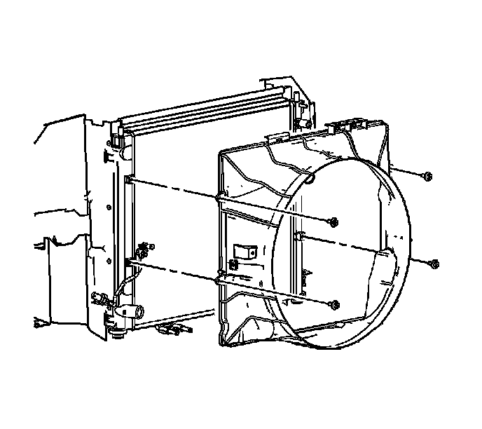

Fan Shroud: Service and Repair
Fan Shroud Replacement (LH2 - Gas, 8 Cylinder, 4.6L, SFI, V8, DOHC, HO)
Removal Procedure

1. Remove the fan. Refer to Engine Cooling Fan Replacement (LH2 - Heavy Duty Cooling) (Service and Repair).
2. Lower the vehicle.
3. Disconnect the condenser tube from the fan shroud retainer clip.
4. Remove the cooling fan shroud retaining bolts.
5. Remove the cooling fan shroud.
Installation Procedure
1. Install the cooling fan shroud.
Notice: Refer to Fastener Notice (Fastener Notice) .
2. Install the cooling fan shroud retaining bolts.
Tighten the bolts to 6.5 N.m (58 lb in).
3. Connect the condenser tube to the fan shroud retainer clip.
4. Raise and support the vehicle. Refer to Lifting and Jacking the Vehicle (Service and Repair) .
5. Install the fan. Refer to Engine Cooling Fan Replacement (LH2 - Heavy Duty Cooling) (Service and Repair).